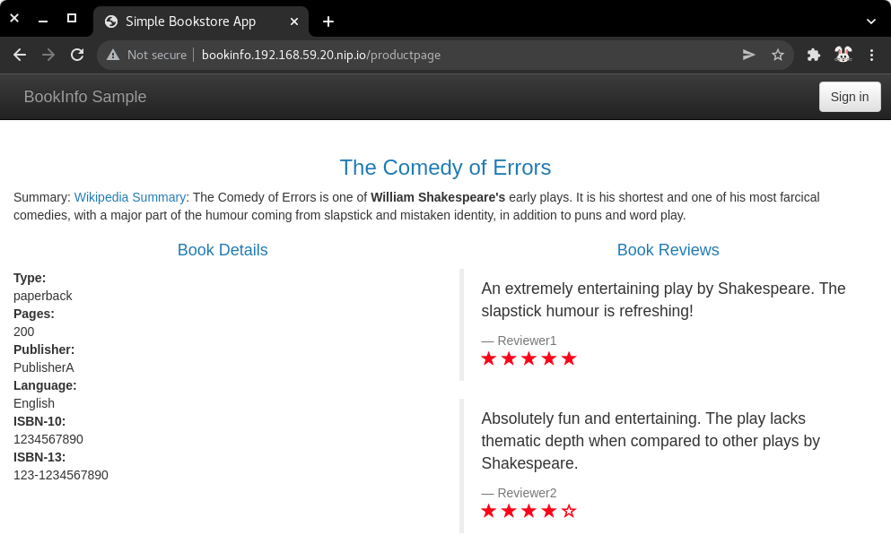
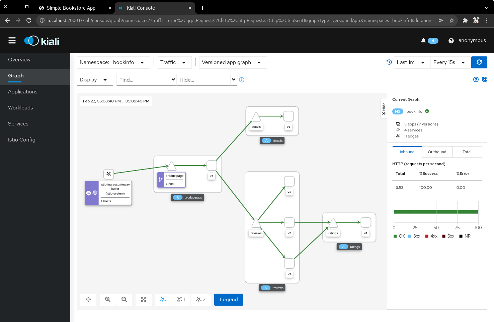
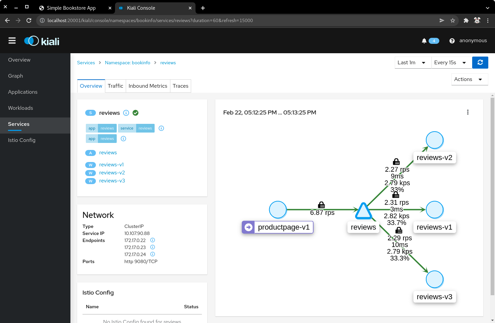
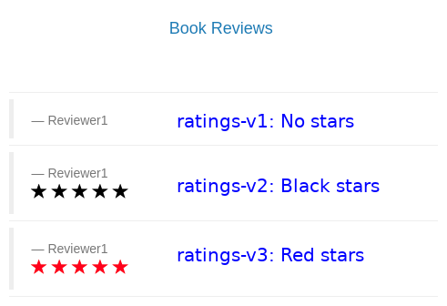
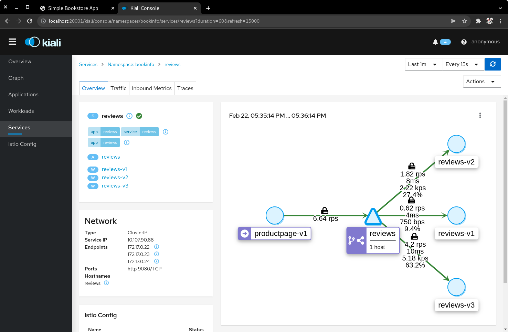

|
Guided Exercise: Configuring Istio Traffic Management
In this exercise, you will configure the amount of traffic that is routed to the backend services using virtual services and destination rules.
Outcomes
You should be able to:
-
Deploy the book info application in the Kubernetes cluster.
-
Configure the gateway, virtual services, and destination rules to manage ingress traffic.
To perform this exercise, ensure that you have:
-
The
kubectl, andminikubeexecutables version 1.24 or higher on a directory listed in${PATH}. -
The
istioctlexecutable version 1.12.1 or higher on a directory listed in${PATH}. -
MetalLB installed in the cluster. You can consult the installation guided exercise.
-
Istio installed in the cluster. You can consult the installation guided exercise.
Procedure instructions
1) Start the minikube instance, and verify that Istio is installed.
1.1) Start the minikube instance.
[user@host kbe]$ minikube start
...output omitted...1.2) Verify that the pods in the metallb-system namespace are running.
[user@host kbe]$ kubectl get pods -n metallb-system
NAME READY STATUS RESTARTS AGE
controller-66bc445b99-2gv6w 1/1 Running 0 3d
speaker-jxjdm 1/1 Running 0 3d|
Warning
|
This guided exercise assumes that MetalLB is installed and configured. |
1.3) Verify that MetalLB has the IP address range configured.
[user@host kbe]$ kubectl get configmap config -n metallb-system -o yaml
apiVersion: v1
data:
config: |
address-pools:
- name: default
protocol: layer2
addresses:
- 192.168.59.20-192.168.59.30
...output omitted...|
Warning
|
If the IP address range for MetalLB is empty, review the troubleshooting section in the MetalLB lecture. |
1.4) Verify that the deployments in the istio-system namespace are running.
[user@host kbe]$ kubectl get deployments -n istio-system
NAME READY UP-TO-DATE AVAILABLE AGE
grafana 1/1 1 1 2d
istio-egressgateway 1/1 1 1 2d
istio-ingressgateway 1/1 1 1 2d
istiod 1/1 1 1 2d
jaeger 1/1 1 1 2d
kiali 1/1 1 1 2d
prometheus 1/1 1 1 2d|
Warning
|
This guided exercise assumes that Istio is installed and configured. |
2) Retrieve the Istio ingress IP address and port.
|
Warning
|
This GE assumes that the IP address for the ingress load balancer service is provided by MetalLB. If MetalLB is not deployed, then the service internal IP address and node port number should be used instead. |
2.1) Get the Istio ingress IP address.
[user@host kbe]$ kubectl get service istio-ingressgateway \
-n istio-system \
-o jsonpath='{.status.loadBalancer.ingress[0].ip}{"\n"}'
192.168.59.20
[user@host kbe]$ export INGRESS_HOST="192.168.59.20"|
Note
|
You can export the IP address using a single command. |
2.2) Get the Istio ingress port numbers for the HTTP and HTTPS endpoints. The service ports match the standard port numbers because MetalLB provided an IP address for the Istio load balancer service.
[user@host kbe]$ kubectl get service istio-ingressgateway \
-n istio-system \
-o jsonpath='{.spec.ports[?(@.name=="http2")].port}{"\n"}'
80
[user@host kbe]$ export INGRESS_PORT="80"
[user@host kbe]$ kubectl get service istio-ingressgateway \
-n istio-system \
-o jsonpath='{.spec.ports[?(@.name=="https")].port}{"\n"}'
443
[user@host kbe]$ export SECURE_INGRESS_PORT="443"|
Note
|
You can export the port numbers using a single command. |
3) Deploy the book info application.
3.1) Create a namespace and update the current context to use it.
[user@host kbe]$ kubectl create namespace bookinfo
namespace/bookinfo created
[user@host kbe]$ kubectl config set-context --current --namespace=bookinfo
Context "minikube" modified.
[user@host kbe]$ kubectl config get-contexts
CURRENT NAME CLUSTER AUTHINFO NAMESPACE
* minikube minikube minikube bookinfo3.2) Enable the sidecar injection on the namespace.
This allows Istio to add an istio-proxy container on each pod to control ingress and egress traffic.
[user@host kbe]$ kubectl label namespace bookinfo istio-injection=enabled --overwrite
namespace/bookinfo labeled3.3) Deploy the bookinfo application.
[user@host kbe]$ export ISTIO_VERSION=1.12.1
[user@host kbe]$ kubectl apply -f \
istio-${ISTIO_VERSION}/samples/bookinfo/platform/kube/bookinfo.yaml
serviceaccount/bookinfo-productpage created
service/productpage created
deployment.apps/productpage-v1 created
serviceaccount/bookinfo-details created
deployment.apps/details-v1 created
service/details created
serviceaccount/bookinfo-reviews created
deployment.apps/reviews-v1 created
deployment.apps/reviews-v2 created
deployment.apps/reviews-v3 created
service/reviews created
serviceaccount/bookinfo-ratings created
deployment.apps/ratings-v1 created
service/ratings created|
Note
|
You can use the resource manifest from GitHub if you don’t have the Istio release archive files. |
3.4) Verify that the deployments are ready, and the services are created.
The pod ready status displays 2/2 indicating that there are two containers running on each pod.
[user@host kbe]$ kubectl get deployments,pods,services
NAME READY UP-TO-DATE AVAILABLE AGE
deployment.apps/details-v1 1/1 1 1 57s
deployment.apps/productpage-v1 1/1 1 1 56s
deployment.apps/ratings-v1 1/1 1 1 57s
deployment.apps/reviews-v1 1/1 1 1 56s
deployment.apps/reviews-v2 1/1 1 1 56s
deployment.apps/reviews-v3 1/1 1 1 56s
NAME READY STATUS RESTARTS AGE
pod/details-v1-7fdb56cffb-xgqb9 2/2 Running 0 74s
pod/productpage-v1-54777f49b-wq5nw 2/2 Running 0 74s
pod/ratings-v1-79f6f7d9d5-mn2b8 2/2 Running 0 74s
pod/reviews-v1-67cc5765c7-cswx8 2/2 Running 0 74s
pod/reviews-v2-6cc9d468f7-48qtn 2/2 Running 0 74s
pod/reviews-v3-6d78c4f789-5przh 2/2 Running 0 74s
NAME TYPE CLUSTER-IP EXTERNAL-IP PORT(S) AGE
service/details ClusterIP 10.107.161.186 <none> 9080/TCP 60s
service/productpage ClusterIP 10.108.47.152 <none> 9080/TCP 59s
service/ratings ClusterIP 10.99.191.190 <none> 9080/TCP 60s
service/reviews ClusterIP 10.107.90.88 <none> 9080/TCP 60s|
Note
|
You might need to repeat the command until the desired condition is reached. |
3.5) List the IP address of the ingress host that you obtained previously.
[user@host kbe]$ printenv INGRESS_HOST
192.168.59.203.6) Create a file named bookinfo-gateway.yaml with the following Istio gateway resource manifest.
-
Replace the
192.168.59.20string with your value forINGRESS_HOST.
---
apiVersion: networking.istio.io/v1alpha3
kind: Gateway
metadata:
name: bookinfo-gateway
spec:
selector:
istio: ingressgateway # (1)
servers:
- hosts:
- "bookinfo.192.168.59.20.nip.io" # (2)
port: # (3)
name: http
number: 80
protocol: HTTP-
Use the Istio default ingress gateway.
-
DNS host name where the gateway will serve traffic.
-
Port number of the proxy will listen for incoming connections.
|
Note
|
The YAML indentation in this file is set to two white spaces. There is a |
3.7) Create a file named bookinfo-virtualservice.yaml with the following Istio virtual service resource manifest.
-
Replace the
192.168.59.20string with your value forINGRESS_HOST.
---
apiVersion: networking.istio.io/v1alpha3
kind: VirtualService
metadata:
name: bookinfo
spec:
gateways:
- bookinfo-gateway # (1)
hosts:
- "bookinfo.192.168.59.20.nip.io" # (2)
http: # (3)
- match: # (4)
- uri:
exact: /productpage
- uri:
prefix: /static
- uri:
exact: /login
- uri:
exact: /logout
- uri:
prefix: /api/v1/products
route: # (5)
- destination:
host: productpage
port:
number: 9080-
Apply the virtual service rules to the specified gateway in the current namespace.
-
DNS host name where the gateway will serve traffic.
-
List of routing rules for the HTTP traffic.
-
List of rules to match against incoming requests.
-
The matching requests will be forwarded to this service and port number.
|
Note
|
The YAML indentation in this file is set to two white spaces. There is a |
3.8) Create the gateway and virtual service resources.
[user@host kbe]$ kubectl apply -f bookinfo-gateway.yaml
gateway.networking.istio.io/bookinfo-gateway created
[user@host kbe]$ kubectl apply -f bookinfo-virtualservice.yaml
virtualservice.networking.istio.io/bookinfo created3.9) Verify that the resources are present in the cluster.
[user@host kbe]$ kubectl get gateways
NAME AGE
bookinfo-gateway 60s
[user@host kbe]$ kubectl get virtualservices
NAME GATEWAYS HOSTS AGE
bookinfo ["bookinfo-gateway"] ["bookinfo.192.168.59.20.nip.io"] 60s3.10) Verify that the service responds with curl.
-
Replace the
192.168.59.20string with your value forINGRESS_HOST.
[user@host kbe]$ printenv INGRESS_HOST
192.168.59.20
[user@host kbe]$ curl -vk# 'http://bookinfo.192.168.59.20.nip.io/productpage' | \
egrep '</?title>'
* Trying 192.168.59.20...
* TCP_NODELAY set
* Connected to bookinfo.192.168.59.20.nip.io (192.168.59.20) port 80 (#0)
> GET /productpage HTTP/1.1
> Host: bookinfo.192.168.59.20.nip.io
> User-Agent: curl/7.61.1
> Accept: */*
>
< HTTP/1.1 200 OK
< content-type: text/html; charset=utf-8
< content-length: 5183
< server: istio-envoy
< date: Tue, 22 Feb 2022 19:40:49 GMT
< x-envoy-upstream-service-time: 18
<
{ [5183 bytes data]
######################################################################### 100.0%
* Connection #0 to host bookinfo.192.168.59.20.nip.io left intact
<title>Simple Bookstore App</title>3.11) Visit the service URL with a web browser to see the page.
-
http://bookinfo.192.168.59.20.nip.io/productpage -
Replace the
192.168.59.20string with your value forINGRESS_HOST.
| Bookinfo application |
|---|

|
4) Generate traffic and inspect the application topology on the Kiali dashboard.
4.1) Open another terminal window and execute a command to generate traffic for the bookinfo application.
-
Replace the
192.168.59.20string with your value forINGRESS_HOST.
[user@host kbe]$ printenv INGRESS_HOST
192.168.59.20
[user@host kbe]$ while true ; do sleep 0.1 ; curl -fsSLo /dev/null \
"http://bookinfo.192.168.59.20.nip.io/productpage" ; done ;4.2) Open another terminal window and execute istioctl to open the Kiali dashboard.
[user@host kbe]$ istioctl dashboard kiali
http://localhost:20001/kiali4.3) Click Graph, then select the bookinfo namespace to view the topology.
There are three versions of the reviews pods, two of which connect to the ratings service.
| Bookinfo application topology |
|---|

|
4.4) Click Services, then select the bookinfo namespace.
Click on the reviews service to view the statistics.
The service distributes all the traffic equally among the three backend pods (33% approximately).
| Reviews service traffic |
|---|

|
5) Create destination rules and adjust the traffic for each backend service.
5.1) Refresh several times the browser window where the bookinfo web page is open.
-
http://bookinfo.192.168.59.20.nip.io/productpage -
Replace the
192.168.59.20string with your value forINGRESS_HOST.
The star rating for the books is different, this happens because every request is processed in a different pod of the reviews service.
| Bookinfo ratings |
|---|

|
5.2) Create a virtual service resource manifest that routes different traffic percentages to different pod versions.
Create a file named reviews-virtualservice.yaml with the following Istio virtual service resource manifest.
---
apiVersion: networking.istio.io/v1alpha3
kind: VirtualService
metadata:
name: reviews
spec:
hosts:
- reviews
http:
- route:
- weight: 10 # (1)
destination:
host: reviews
subset: v1
- weight: 30 # (2)
destination:
host: reviews
subset: v2
- weight: 60 # (3)
destination:
host: reviews
subset: v3-
10% of the traffic will be redirected to
reviewssubsetv1. -
30% of the traffic will be redirected to
reviewssubsetv2. -
60% of the traffic will be redirected to
reviewssubsetv3.
|
Note
|
The YAML indentation in this file is set to two white spaces. There is a |
5.3) Create a destination rule resource manifest with selectors for the different versions of the reviews pods.
Create a file named reviews-destinationrule.yaml with the following Istio destination rule resource manifest.
---
apiVersion: networking.istio.io/v1alpha3
kind: DestinationRule
metadata:
name: reviews
spec:
host: reviews
subsets:
- name: v1 # (1)
labels:
version: v1
- name: v2 # (2)
labels:
version: v2
- name: v3 # (3)
labels:
version: v3-
The subset
v1references pods with labelversion: v1. -
The subset
v2references pods with labelversion: v2. -
The subset
v3references pods with labelversion: v3.
|
Note
|
The YAML indentation in this file is set to two white spaces. There is a |
5.4) Create the virtualservice and destination rule resources.
[user@host kbe]$ kubectl apply -f reviews-virtualservice.yaml
virtualservice.networking.istio.io/reviews created
[user@host kbe]$ kubectl apply -f reviews-destinationrule.yaml
destinationrule.networking.istio.io/reviews created5.5) Verify that the virtualservice and destination rule were created.
[user@host kbe]$ kubectl get virtualservices
NAME GATEWAYS HOSTS AGE
bookinfo ["bookinfo-gateway"] ["bookinfo.192.168.59.20.nip.io"] 1h
reviews ["reviews"] 60s
[user@host kbe]$ kubectl get destinationrules
NAME HOST AGE
reviews reviews 60s5.6) Wait for the Kiali dashboard window to refresh and view the traffic percentage on each version of the reviews pod.
|
Warning
|
Check the order of the pods, the image below displays them in a different order:
|
| Bookinfo reviews traffic split with destination rule selector |
|---|

|
6) Cleanup
6.1) Press Ctrl+C on the terminal window where the traffic generation command is running.
[user@host kbe]$ while true ; do sleep 0.1 ; curl -fsSLo /dev/null \
"http://bookinfo.192.168.59.20.nip.io/productpage" ; done ;
^C6.2) Press Ctrl+C on the terminal window where istioctl is running.
[user@host kbe]$ istioctl dashboard kiali
http://localhost:20001/kiali
^C6.3) Remove the label from the bookinfo namespace.
[user@host kbe]$ kubectl label namespace bookinfo istio-injection- namespace/bookinfo labeled
|
Note
|
The dash at the end of the command is used to instruct |
6.4) Delete the bookinfo namespace.
[user@host kbe]$ kubectl delete namespace bookinfo namespace/bookinfo deleted
6.5) Update the current context for kubectl.
[user@host kbe]$ kubectl config set-context --current --namespace=default Context "minikube" modified. [user@host kbe]$ kubectl config get-contexts CURRENT NAME CLUSTER AUTHINFO NAMESPACE * minikube minikube minikube default
This concludes the guided exercise.
References
-
https://istio.io/v1.12/docs/tasks/traffic-management/request-routing/
-
https://istio.io/v1.12/docs/tasks/traffic-management/traffic-shifting/
-
https://istio.io/v1.12/docs/reference/config/networking/gateway/
-
https://istio.io/v1.12/docs/reference/config/networking/virtual-service/
-
https://istio.io/v1.12/docs/reference/config/networking/destination-rule/
|